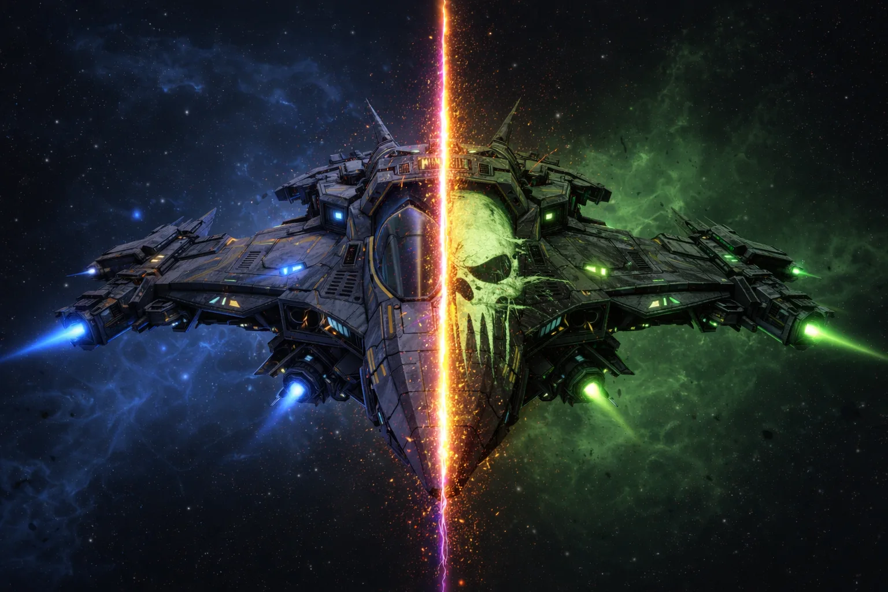
01 / LIVE CHARACTERS
Meet the unexpected
Receive calls and messages from characters performed live. Ask questions, weigh what they tell you and decide how to respond.
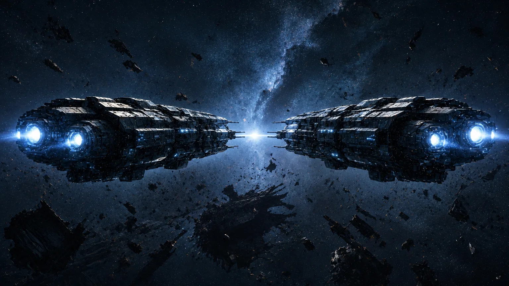
Take your place aboard a starship. Meet characters performed live, unravel mysteries and decide what happens next—together.
No game or roleplay experience needed. We train you before the mission begins.
Start at the beginning, or jump to what you need.
See what playing feels like and find your place on the bridge.
Explore the experience →02 / READY TO TRY?Meet the community, open Terminal and book your first game.
Find your first crew →03 / ALREADY BOOKED?Set up your device and know where to go when your game starts.
Get ready for launch →Join a crew of usually 4–6 players, each online from their own device. In EmptyEpsilon, the starship game software, you operate one station while your team talks over Discord and makes decisions together.
UFN means United Federated Navy, the setting for our missions. SXP (Shared XP) is the Discord community where you find games and meet your team.
You operate one part of the ship, talk with your crewmates and decide together what to do next. Here is an illustrative moment:
You only need to learn your own station, and we train you before play begins.

Receive calls and messages from characters performed live. Ask questions, weigh what they tell you and decide how to respond.
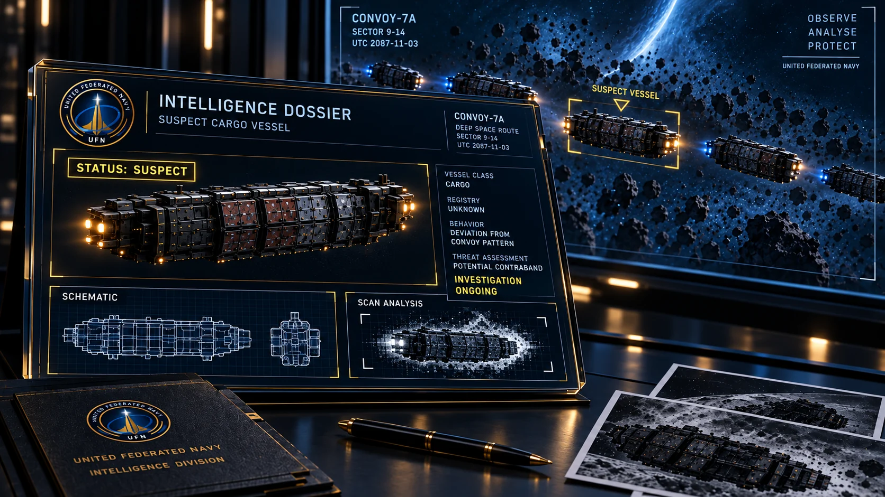
Investigate strange events, protect other ships, navigate tense encounters or work out what is really happening. Your crew brings different skills to the same problem.
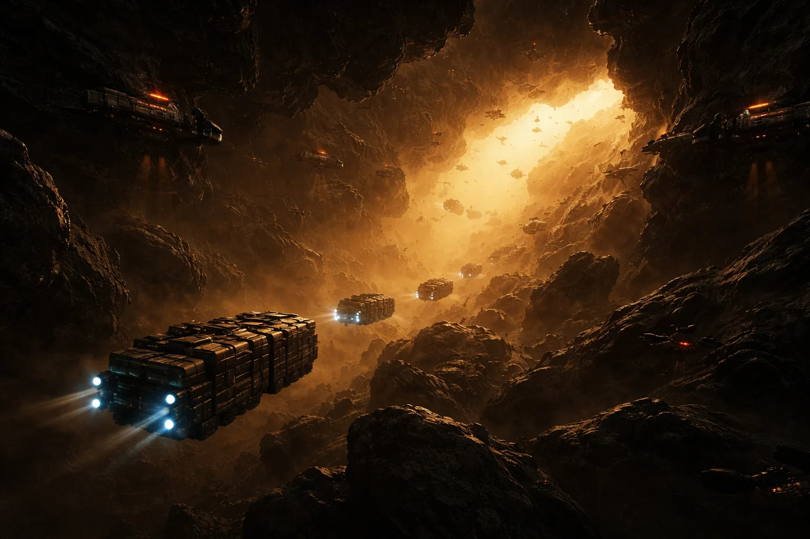
There may be danger and combat, but listening, communicating and choosing your next move are just as much a part of the adventure.
Mission characters are performed live. They can message your ship or speak with your crew, responding to the questions you ask and the decisions you make.
A character may hail your ship in EmptyEpsilon. Read the message together, ask questions and decide how to reply.
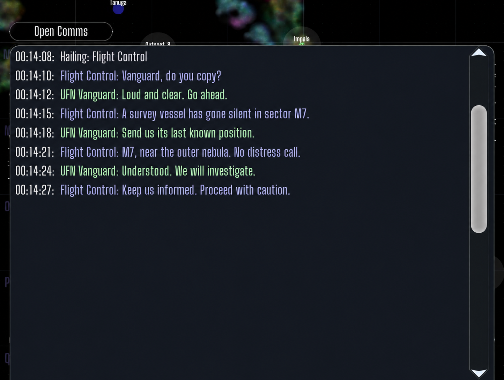
Some characters speak with your crew in real time. Listen, ask them questions and respond in your own words.
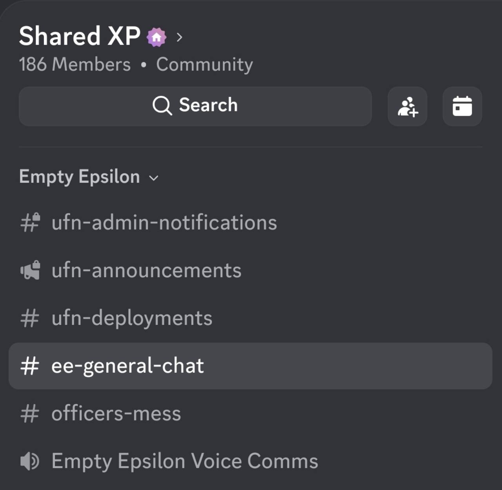
Your Flight Controller runs the session and helps your crew follow the action. You and your crewmates use the same Discord voice channel to talk throughout the mission.
Yes! We start with a briefing and training on your station before the mission begins. You can ask questions as you go, and your Flight Controller will guide the crew.
You run one part of a starship with your crew, talk with characters performed live, follow clues and decide what to do together. Every mission has its own surprises.
About 1½–2 hours. That includes the briefing, station training, the mission itself and a team debrief afterwards.
Yes. Each player joins from their own device over the internet. You use Discord for voice and EmptyEpsilon—or our browser version—for the game.
Only if you want to. Some people play a character; others keep things straightforward. Either way is welcome, as long as everyone treats the rest of the crew well.
You can enjoy a standalone mission, or request our connected six-story campaign, which private groups often play together. You don’t need to commit to a campaign to try your first game.
One ship, six different jobs. Discover the stations you might enjoy, then choose what you’d like to try.
You can book on your own. If you already have a group, arrange slots directly with Smarty, SXP Director and Lead Flight Controller for UFN games.
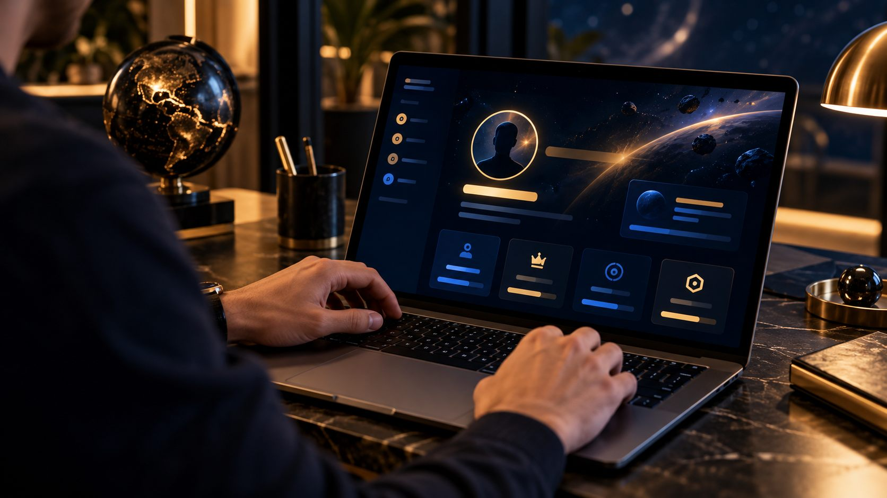
02Book your first game and start a record of your time with UFN.
Open Terminal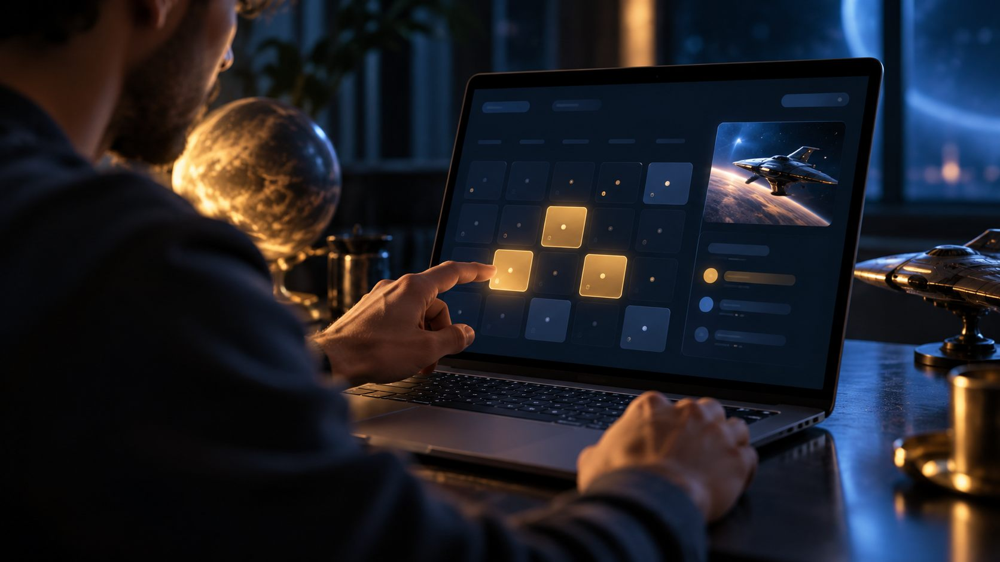
03Tell us your first and second station choices, or select no preference. Terminal tries to place you accordingly; crews can discuss and change stations right up to mission start.
Terminal is our mission booking system. You can also use it to revisit your mission history, stations, medals and promotions.
UFN Terminal is our mission booking system. It is also where you can follow your journey as a player: see the sessions you have played, read your mission reports and keep track of the stations you have taken.
Your record also shows the medals and promotions you earn along the way.
Explore UFN Terminal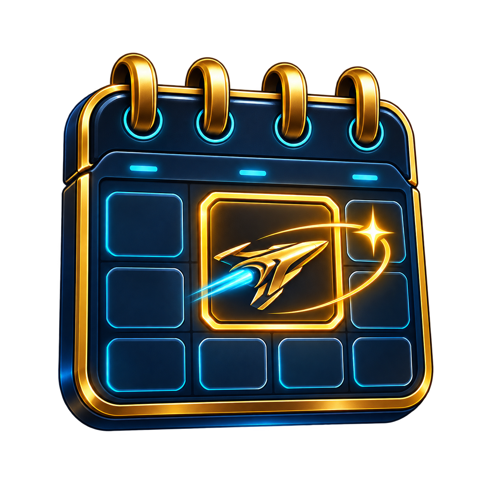
Book missionsFind open slots and manage your bookings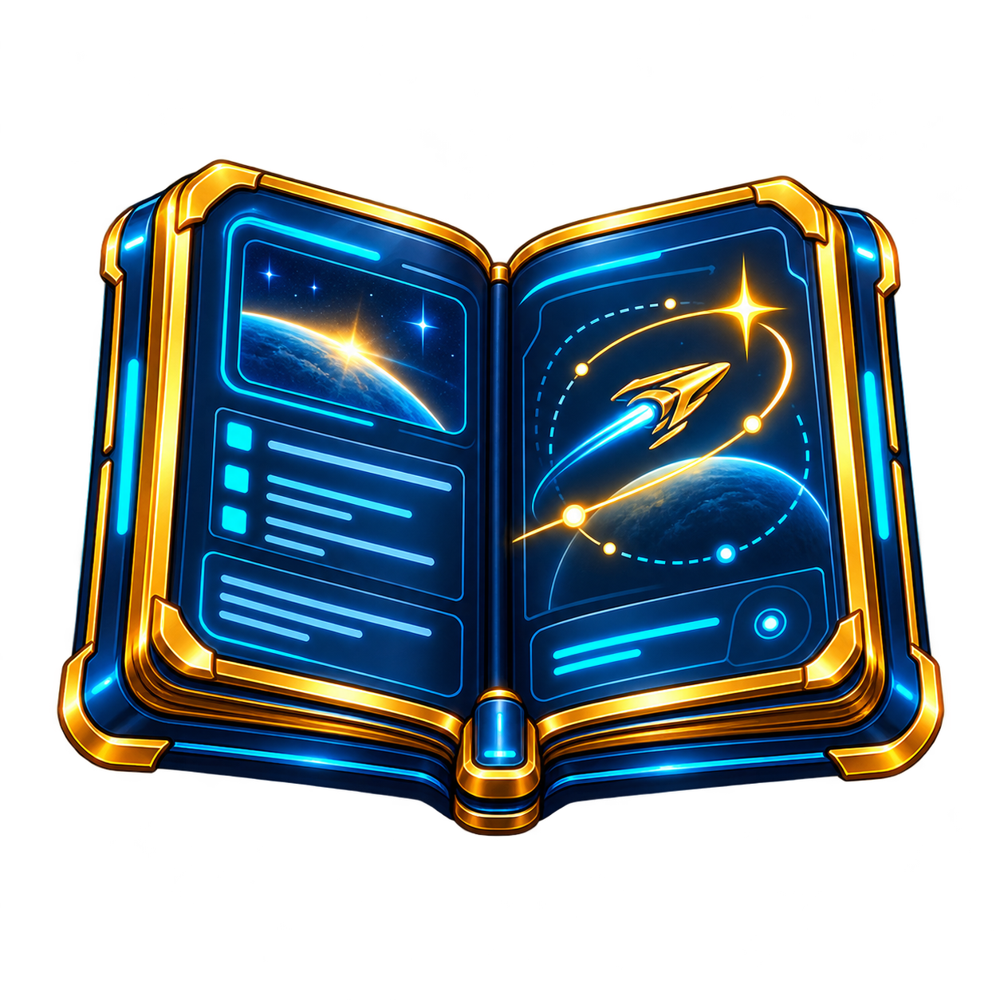
Revisit your storyRead reports from your sessions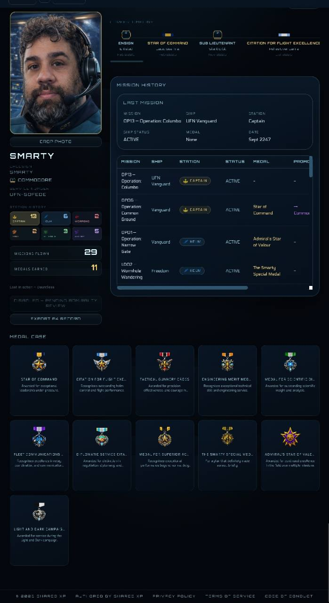
Keep an eye on #ufn-deployments in SXP Discord for upcoming missions, or ask there about joining a future crew. If you already have a group, you can arrange slots directly with Smarty.
Both! You can take an open slot and join a crew of usually 4–6 players. If you have a group, ask Smarty in SXP Discord about arranging slots together.
You can pick a first and second choice in Terminal, or say you have no preference. Terminal tries to match you, and your crew can still discuss or change stations right up to the start.
Open slots are in Terminal. You can also see upcoming missions in #ufn-deployments on SXP Discord. Once you book, Terminal keeps your mission details.
Keep an eye on #ufn-deployments, or ask in SXP Discord about a future mission. Already have a group? Smarty can help you arrange slots.
Yes. Have a look through the missions on our Training Portal to get a feel for the stories. When you’re ready to play, check Terminal for open slots.
Not at the moment. Joining SXP, using Terminal and playing UFN Missions are all free.
That happens. Cancel in Terminal or let us know in #ufn-deployments. As much notice as you can give helps us offer the place to someone else.
Bring a reliable internet connection, a Discord account and a working microphone. Headphones or a headset are recommended.
Choose your device or browser to see the setup you need.
Select an option above. Your instructions will appear here.
Download EmptyEpsilon from the official website or Steam. Check that you have EE-2024.12.08.
Download the matching EE-2024.12.08 APK from the EmptyEpsilon website.
Use browser access from the top of your Terminal page once the game is live. You can also use BlueStacks with the matching Android APK, or run Windows through Parallels or similar software.
Browser play works in Chrome, Edge, Firefox and Safari. The access link appears at the top of your Terminal page once the game is live. Ask your Flight Controller for help when you join the voice channel.
For installed play, match the host version: EmptyEpsilon EE-2024.12.08. Check that the game opens before your session.
These are the practical bits to have ready. Your Flight Controller will guide you through the game itself.
Check your details in Terminal and join a little early. The voice channel named after your mission usually appears in SXP Discord at your game’s start time. Join it and your Flight Controller will guide you from there.
Set aside around 1½–2 hours, including training and the debrief.
Meet the team and find out what your mission is about.
Learn your controls, try things out and ask questions before the mission starts.
Work with your crew as new information, characters and challenges enter the story.
Talk through the experience together. Medals or promotions may also be awarded.
A reliable internet connection, a Discord account and a working microphone. Headphones or a headset help too. If you’re using the installed game, set it up before your session and join a little early.
If you want to use the game app, install the matching EE-2024.12.08 version beforehand. You can also play in Chrome, Edge, Firefox or Safari; the browser link appears at the top of Terminal when your game is live.
Yes. Android players can get the matching APK from the EmptyEpsilon website. On Mac, the easiest option is browser play through Terminal when your game is live. BlueStacks with the APK or Windows through Parallels are other options.
Check your mission details in Terminal and join a little early. The voice channel named after your mission usually appears in SXP Discord at the start time. Join it and your Flight Controller will take it from there.
We’ll do what we can. Message Smarty in SXP Discord before your game, or talk to your Flight Controller on the day. We can often use less text or voice, or reduce the voice effects on characters. Tell us what would help.
Find an answer here, or ask the community. Your Flight Controller will help you get started.
Yes! We start with a briefing and training on your station before the mission begins. You can ask questions as you go, and your Flight Controller will guide the crew.
You run one part of a starship with your crew, talk with characters performed live, follow clues and decide what to do together. Every mission has its own surprises.
About 1½–2 hours. That includes the briefing, station training, the mission itself and a team debrief afterwards.
Yes. Each player joins from their own device over the internet. You use Discord for voice and EmptyEpsilon—or our browser version—for the game.
Only if you want to. Some people play a character; others keep things straightforward. Either way is welcome, as long as everyone treats the rest of the crew well.
You can enjoy a standalone mission, or request our connected six-story campaign, which private groups often play together. You don’t need to commit to a campaign to try your first game.
Both! You can take an open slot and join a crew of usually 4–6 players. If you have a group, ask Smarty in SXP Discord about arranging slots together.
You can pick a first and second choice in Terminal, or say you have no preference. Terminal tries to match you, and your crew can still discuss or change stations right up to the start.
Open slots are in Terminal. You can also see upcoming missions in #ufn-deployments on SXP Discord. Once you book, Terminal keeps your mission details.
Keep an eye on #ufn-deployments, or ask in SXP Discord about a future mission. Already have a group? Smarty can help you arrange slots.
Yes. Have a look through the missions on our Training Portal to get a feel for the stories. When you’re ready to play, check Terminal for open slots.
Not at the moment. Joining SXP, using Terminal and playing UFN Missions are all free.
That happens. Cancel in Terminal or let us know in #ufn-deployments. As much notice as you can give helps us offer the place to someone else.
A reliable internet connection, a Discord account and a working microphone. Headphones or a headset help too. If you’re using the installed game, set it up before your session and join a little early.
If you want to use the game app, install the matching EE-2024.12.08 version beforehand. You can also play in Chrome, Edge, Firefox or Safari; the browser link appears at the top of Terminal when your game is live.
Yes. Android players can get the matching APK from the EmptyEpsilon website. On Mac, the easiest option is browser play through Terminal when your game is live. BlueStacks with the APK or Windows through Parallels are other options.
Check your mission details in Terminal and join a little early. The voice channel named after your mission usually appears in SXP Discord at the start time. Join it and your Flight Controller will take it from there.
We’ll do what we can. Message Smarty in SXP Discord before your game, or talk to your Flight Controller on the day. We can often use less text or voice, or reduce the voice effects on characters. Tell us what would help.